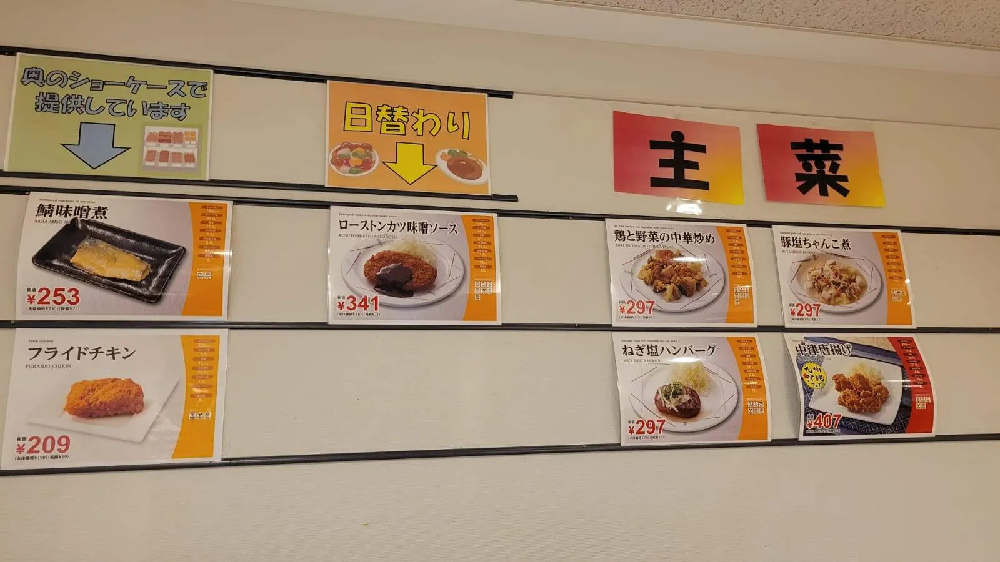
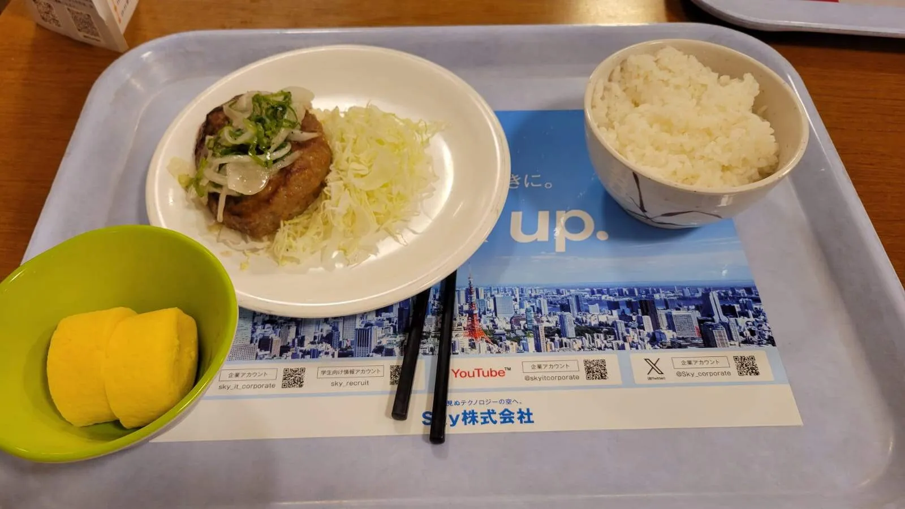
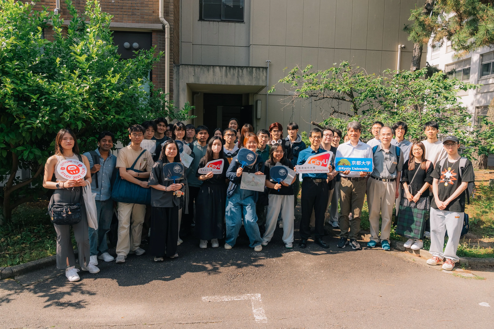
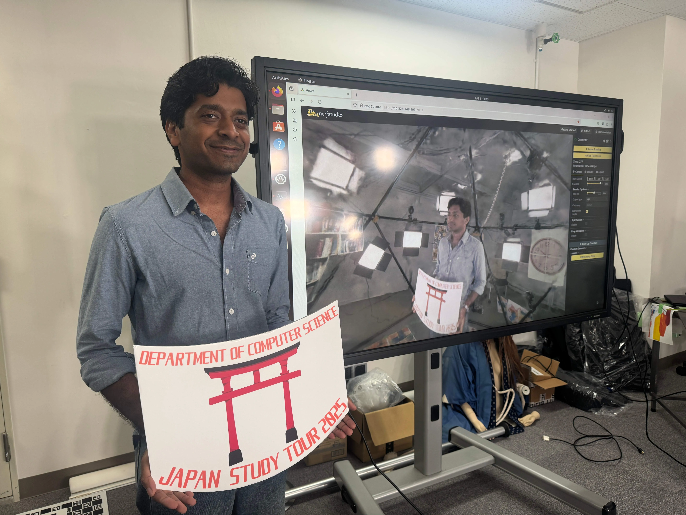
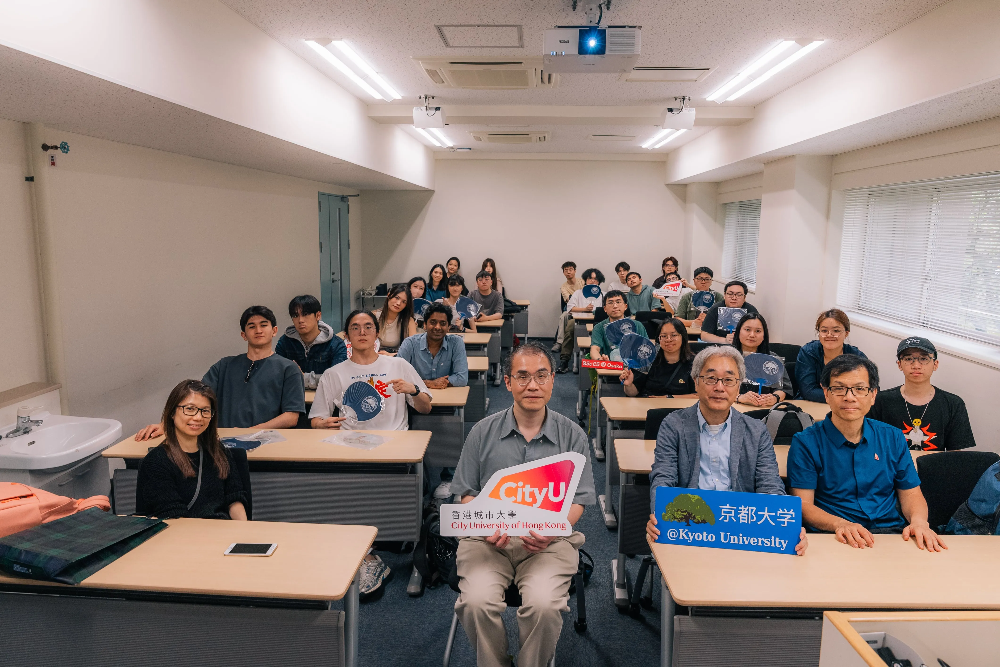

Project Showcase @ Kyoto University Yoshida Campus
Arriving at Kyoto University
After going to the Kanadevia A.I/TEC, we took the metro to Demachiyanagi station and walked to the campus.

Lunch @ Kyoto University Canteen
We enjoyed a good lunch at their canteen, which had a variety of choices.
 
Project Showcase @ Computer Vision Laboratory
We were warmly welcomed by Professor Ko NISHINO, whose research group demonstrated pioneering work in 3D Gaussian splatting for realistic scene modeling. Students showcased advanced Gaussian‑based volumetric representations techniques that enable real‑time rendering and dynamic scene capture.
Here's our 3D Gaussian splatting results:
Thank you Professor Ko NISHINO and the team~
Their table‑tennis “player support system” impressed us: a smart system using multi‑angle cameras including first‑person views to track ball trajectories, predict plays, and provide machine‑learning‑driven feedback for human athletes. This integration of vision, tracking, and sports analysis exemplifies the group’s broad technical range.
We also had the chance to see a demonstration of SPIDeRS (Structured Polarization for Invisible Depth and Reflectance Sensing), an impressive system that captures 3D geometry and material properties using invisible polarized light.
Project Showcase @ HRI Lab
We are warmly welcomed to the laboratory of Professor Takayuki KANDA, a distinguished research group in the field of Human-Robot Interaction (HRI).
Next, Professor Stela Hanbyeol SEO introduced us to immersive human–robot interaction research, centered on interactive VR and teleoperation. His work in social teleoperation and mixed‑reality interfaces leverages virtual humans and humanoid robots to improve user engagement, remote collaboration, and social rapport. Students demonstrated VR‑enabled experiments where participants collaborated with both virtual agents and physical robots, highlighting explainable interactions and transparent awareness between human and robot teammates.
Thank you Professor Jani EVEN and Professor Dražen BRŠČIĆ for the insightful and inspiring session.
The tour was highlighted by a memorable introduction to a robot named ライカ (Leica), shared by Professor Kanae KOCHIGAMI. We couldn't resist the perfect photo opportunity—capturing a picture of Leica with our own Leica camera.
Finally, Professor Takayuki KANDA gave an insightful presentation on the future of human–robot interaction, in which several PhD students and researchers also shared their work. Professor Takayuki KANDA outlined current challenges such as achieving naturalistic social behaviors, robust teleoperation, and scalable learning and shared the group’s progress: designing socially intelligent interfaces and improving telepresence for real‑time interaction. He emphasized a clear roadmap toward robots that can seamlessly collaborate with humans across domains from education and healthcare to disaster response underlining the multidisciplinary nature of this vision.
Souvenir Presenting
We expressed our gratitude to the students and professors by presenting souvenirs.